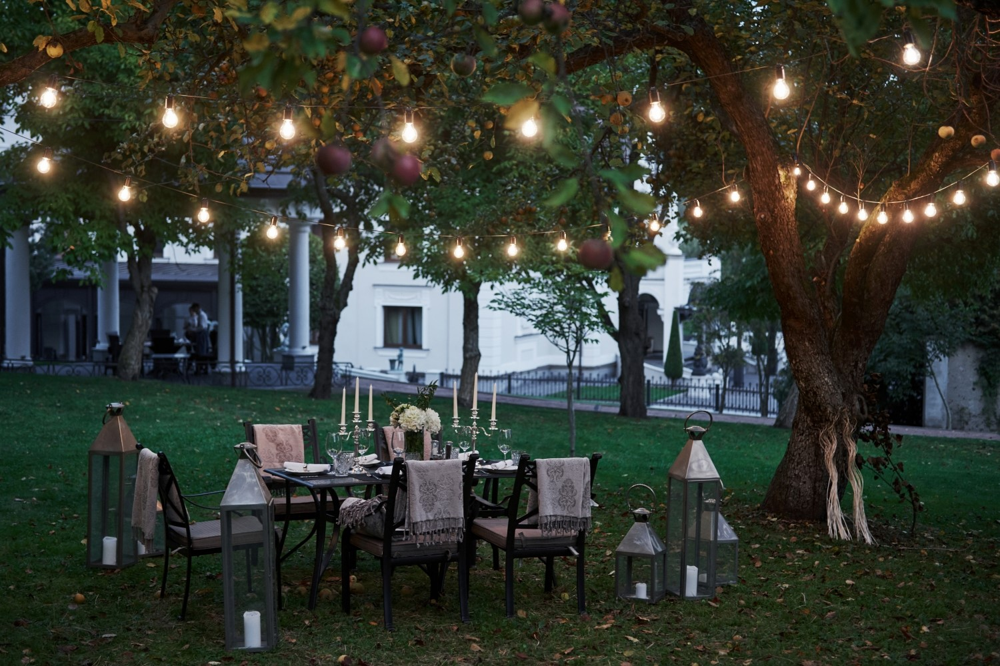
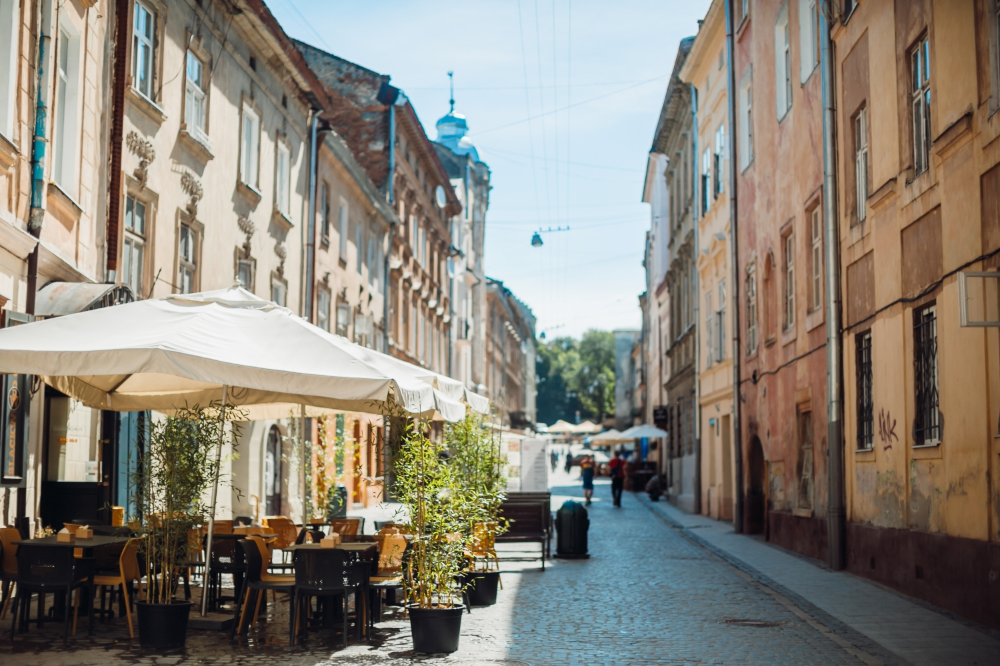
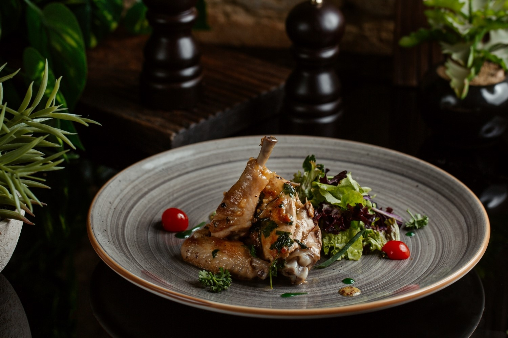

How about comfort?

The restaurant envelops an atmosphere of comfort and coziness. Soft lighting, pleasant music, and stylish interior create a romantic mood, perfect for a romantic rendezvous. The restaurant staff takes care of each guest, providing attention and friendliness.
The evening restaurant is atmospheric and luxurious. Golden lighting, candles on the tables, and sophisticated decor create a romantic setting for a dinner for two or an important event. The service staff graciously welcomes guests and ensures a high level of service, while chefs offer exquisite dishes that satisfy the most discerning palates. The restaurant exudes an atmosphere of luxury and elegance, perfect for special moments and unforgettable evenings.
The first restaurant was opened in France in the mid-18th century. One of the most famous restaurants, "Le Procope," was opened in Paris in 1686 and is still operational. It is considered one of the oldest restaurants in the world and became popular as a place for lunches and meetings of prominent writers and politicians such as Voltaire, Robespierre, and Napoleon Bonaparte. Restaurants gained popularity due to the development of gastronomy and food culture in France at that time.
Restaurants located on narrow streets create a special and atmospheric environment. Narrow arches and historic buildings create the perfect atmosphere for lunches and dinners. These restaurants are often known for their traditional cuisine and unique dishes that can be tasted only there. Evenings in such restaurants are often accompanied by live music or performances by local artists, adding a romantic touch. Visiting a restaurant on a narrow street can be a special experience that leaves unforgettable impressions.
The bar in the restaurant is a place where guests can enjoy sophisticated alcoholic beverages and cocktails before or after dinner. It often offers a wide selection of alcohol, including wines, spirits, and non-alcoholic drinks. Bartenders are usually skilled at advising guests on drink choices and preparing tasty cocktails on demand. The atmosphere in the bar can be businesslike and elegant or light and entertaining, depending on the restaurant's style. The restaurant bar provides an opportunity to savor diverse flavors and enriches guests' overall gastronomic experience.
Exquisite dishes always require the use of the highest quality ingredients. This means using fresh and natural ingredients that give dishes a special taste and aroma. Quality products play a key role in creating gastronomic masterpieces, and they undergo careful processing and preparation by chefs. Awareness of the origin and cultivation of products allows the creation of dishes that satisfy the refined taste of clients. Exquisite dishes and quality products create an unparalleled gastronomic experience for those who appreciate fine cuisine.
Dinner for two is a time when a couple can enjoy each other's company in a luxurious setting. It typically includes exquisite dishes and wine or cocktails, creating a romantic atmosphere. Restaurants offering dinner for two often have special tables or corners. Chefs ensure that the dishes are special and tasty, while the service staff creates comfort and an atmosphere for an unforgettable evening. Dinner for two can be a wonderful way to celebrate a special occasion or simply enjoy time together.
The restaurant's summer terrace is the perfect place to relax and enjoy in the summer. It is usually located under the open sky or designated for outdoor service. On the terrace, one can enjoy natural landscapes, fresh air, and sunny rays. The menu on the summer terrace typically includes fresh seasonal vegetables, fruits, and dishes that perfectly complement warm weather. The restaurant's summer terrace creates a romantic atmosphere for dinner under the stars or a place to meet friends during a summer night.